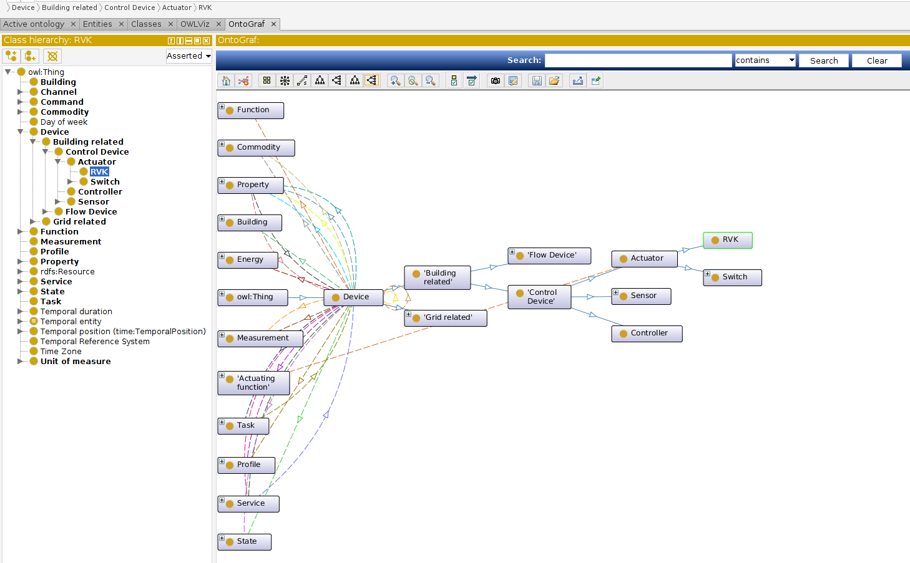

SARGON Ontology Overview¶
SARGON is an ontology-based metadata schema that captures the entities and relationships necessary for effective representations of buildings, smart grids and and their subsystems. SARGON describes the information in a machine readable format to enable programmatic exploration of different operational, structural and functional facets of a building.
Design Principles¶
SARGON was built following the LOT (Linked Open Terms) methodology, the LOT methodology, which is built on top of the ontological engineering activities defined in the NeOn. LOT method is based on agile techniques where the development of the ontology is organized in sprints or iterations. This methodology defines iterations over the following activities:
Ontological requirements specification: The goal of the ontological requirements specification process is to extract the set of requirements that will guide the implementation and validation of the ontology. These ontological requirements aims to state why the ontology is being built, what its intended uses are, who the end-users are, and which requirements the ontology should fulfill. There are two types of requirements: functional requirements, which refer to the particular knowledge to be represented by the ontology, and non-functional requirements, which refer to the characteristics, qualities, or generalaspects not related to the ontology content that the ontology should satisfy.
Ontology implementation: During the ontology implementation activity, the ontology is built using a formal implementation language based on the ontological requirements identified in the previous activity. The ontology implementation is usually divided into the following sub-activities:
Conceptualization
Encoding
Evaluation
Reuse
Ontology publication: The aim of this activity is to make the ontology available online both as a human-readable documentation andin a machine-readable format. The machine-readable format has to be obtained during the previous implementation activity, while the human-readable documentation should be carried out during this activity by describing, in HTML pages, the content of the ontology with diagrams and examples to improve ontology readability and reusability
Ontology maintenance: During this activity the ontology is updated with new information, which may be needed after new requirementsidentification or bugs detection. This activity can be triggered during or after the ontology development process, if new requirements or bugs are detected, or if a new version of the ontology needs to be generated.
Core Concepts¶
These are the essential concepts of SARGON.
Entity: an entity is an abstraction of any physical or logical item; the actual “things” in a building.
Learn more
Physical entities are anything that has a physical presence in the world. Examples are mechanical equipment such as PMU units, properties locatedIn, hasSensor and controlProperty, networked devices like electric meters, thermostats and electrical vehicle chargers, and spatial elements like rooms and floors.
Logical entities are those entities or collections of entities that are defined by a set of rules. Examples are PID controller zones. Concepts such as class names and tags (defined below) also fall into this category.
Tag: a tag is an atomic fact or attribute of an entity.
Examples of tags are sensor, setpoint, air, water, discharge, leaving and vav.
SARGON borrows the concept of tags from Project Haystack in order to preserve the flexibility and ease of use for annotation; however, SARGON does not rely on tags alone to determine the type of an entity.
Class: a class is a named category with intensional meaning (a definition) used for grouping entities. Classes are organized into a hierarchy, and entities are instances of one or more classes (that is, the type of an entity is given by one or more classes). Classes also have a set of associated tags, which provide helpful annotations for discovery.
Relationship: a relationship defines the nature of a link between two related entities. Examples of relationships are encapsulation (one entity is contained within another), sequence (one entity takes effect before another in some process) and instantiation (one entity’s type is given by another entity).
Graph: an abstract organizational data structure representing a set of entities (nodes) and relationships (edges). Brick is represented by a directed, labeled graph.
{class=”mx-auto w-6/12”}
Learn more
This figure is an illustration of a generic directed graph. In the context of SARGON, nodes in a graph are entities and the edges of the graph are relationships. The source and destination nodes of an edge indicate the subject and object entities of the relationship given by the name of the edge.
We recommend reading the Wikipedia page on the abstract graph data structure.
In SARGON, the graph is represented using the RDF data model. The RDF primer page is an excellent introduction to how a graph is represented using RDF.
SARGON Model: a SARGON model is a digital representation of a building that adheres to the SARGON schema. Entities in a SARGON model are classified according to the classes defined by Brick, and are connected using the relationships defined by Brick. Several reference models are available for download.

Learn more
The light green nodes represent entities that are instances of SARGON classes.These are the “things” inside our example Device. They range from equipment (Actuator, Meter), points (Room01), locations (Geo-Property). The colored boxes connected to the instances with lines represent SARGON classes; the dashed line represents the “is an instance of” relationship (rdf:type). The rest of the class structure has been elided for simplicity. Lastly, the solid directed edges represent SARGON relationships between entities.